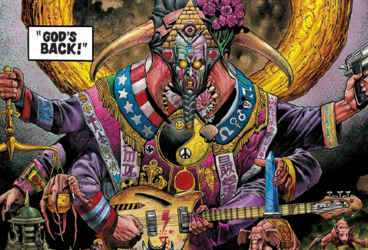

This has a religious enforcer (the titular Canon Fodder) investigating the double suicide of lovers Holmes and Moriarty, who have killed themselves in order that they can visit heaven and murder God.
Art by Chris Weston
| Story Title | Parts | Pages | w indicates a wraparound coverCovers | Year(s) | Issues | Writer | Artist | Colourist | Letterer |
|---|---|---|---|---|---|---|---|---|---|
| Canon Fodder | 7 | 41 | 861: Chris Weston 864: Gary Erskine 2 | 1993 | Reprints: M278 (supplement)861-867 | Mark Millar | Chris Weston | <-- | Tom Frame |
| [Dark Matter] | 8 | + 1 credit pages48 | 986: Chris Weston 1 | 1996 | Reprints: M291 (supplement)980-987 | Kek-W | Chris Weston | <-- | Annie Parkhouse |
| year | episodes | pages |
| 1984 | 0 | 0 |
| 1985 | 0 | 0 |
| 1986 | 0 | 0 |
| 1987 | 0 | 0 |
| 1988 | 0 | 0 |
| 1989 | 0 | 0 |
| 1990 | 0 | 0 |
| 1991 | 0 | 0 |
| 1992 | 0 | 0 |
| 1993 | 7 | 41 |
| 1994 | 0 | 0 |
| 1995 | 0 | 0 |
| 1996 | 8 | 48 |
| 1997 | 0 | 0 |
| 1998 | 0 | 0 |
| 1999 | 0 | 0 |
| 2000 | 0 | 0 |
| 2001 | 0 | 0 |
| 2002 | 0 | 0 |
| 2003 | 0 | 0 |
| 2004 | 0 | 0 |
| 2005 | 0 | 0 |